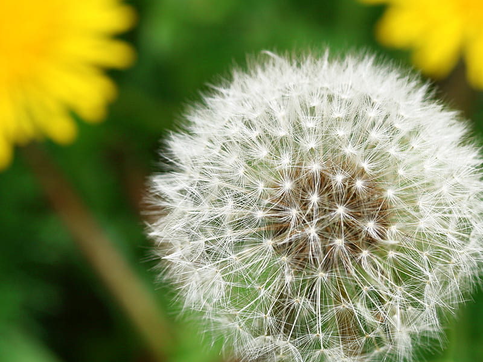
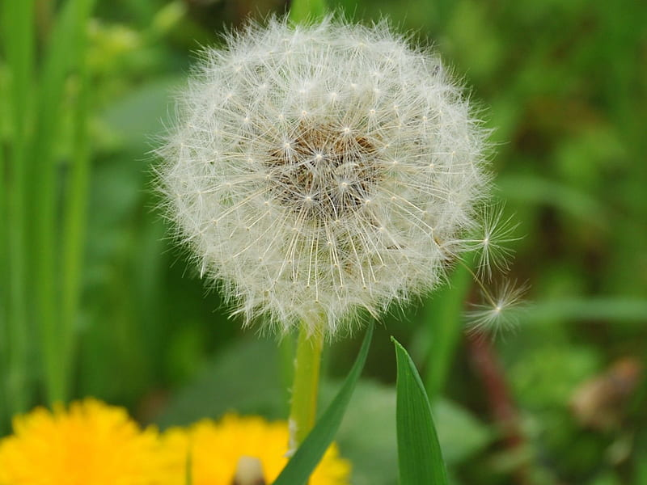
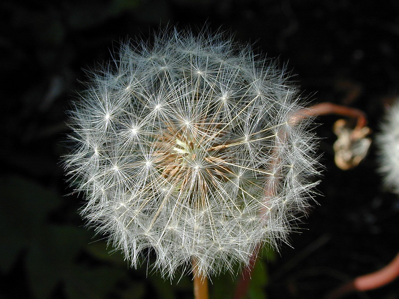
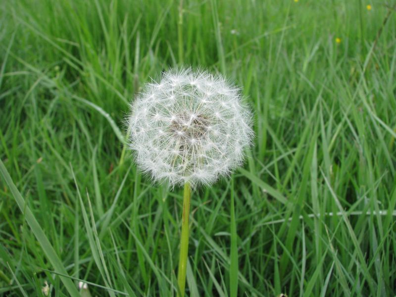

Meaning: Divination, Fortune-telling
Origin
Dandelions are associated with wishes and fortune-telling; it’s customary in many Western cultures to make a wish while blowing on the dandelion’s “puff,” dispersing its seeds. More practically, dandelions have been used to predict the weather, as their puffs will stay closed in inclement weather and open when sunny, clear skies are on the way.
Gallery



